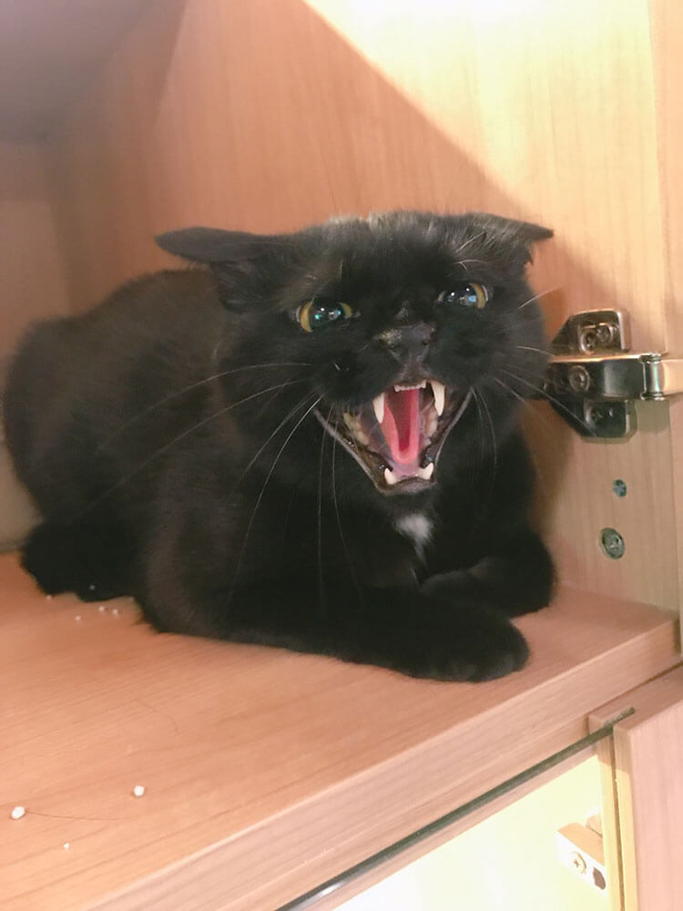

Review 2018
沒想到 2018 年唯一一篇也是回顧。
閱讀 🤓
今年喜歡的閱讀：
- Walk Through Walls: A Memoir
- 《達悟族神話與傳說》
- 《西拉雅末裔潘銀花》
- 《陳澄波密碼》
- 《莿桐花之戰》
- 《妖姬・特務・梅花鹿：白虹的影海人生》
終於讀完《台灣人四百年史》圖文簡明版，閱讀後的心情就像 Guy Montag 那樣痛苦痛苦的
老灰啊登山社 ⛰
今年托曾女之福，爬了非常多山：
- 阿塱壹古道
- 茶壺山
- 草嶺古道
- 皇帝殿
- 剪刀石山
- 七星山
- 烏來
- 銀河洞
- 錐麓古道
好像還有漏掉的想不起來，希望 2019 年可以去東谷沙飛
跑啊 👟

今年首次嘗試跑步比賽跟參加跑團，第一場越野跑是 Explore Your Backyard，第二場是 Formosa Trail，都是跑 8K，我想我準備好第三場報名 10K 以上的了。
慢跑滿一年，參加 Explore Your Backyard 之後，遇到非常挫折的運動撞牆期，花了很多精神調整飲食、學重訓，終於在最近才確定找回好的感覺，這樣想起來撞牆期應該有長達 6 個月誒。
Pongso no tao

今年自已去蘭嶼旅行，在島上的前兩天很巧的遇到同學大蝦。
在 Pongso no tao 待了十天，然後再也忘不掉這個地球上可愛的小角落，每天晚上看不膩的夏季大三角、早上趁太陽毒辣起來以前去泡海水。
Pongso no tao 是人之島的意思，蘭嶼是國民黨亂取的，真的很受不了很不會取名字又到處亂改 🙄
我喜歡部落原本的名字：
- Iraraley，每天早上到這裡的秘境玩水，然後在發呆亭晾乾
- Iranmelek 賣自製飾品的阿姨教我說 ayuyi
- Ivalino 賣剉冰的阿姨陪我聊天還有路上悠閒的小豬
- 住在 Imorod 的浮淺教練打魚請我吃，民宿妹妹請我去他家吃晚餐
- 在 Yayo 民宿遇到各地的背包客
盡量把行李的空間塞滿帶回的垃圾：民宿供水不多，忍不住在 7-11 買的礦泉水、在 Iranmelek 秘境撿的垃圾傘

塗鴉 🎨
今年跟朋友一起開始的 Hashtag 228，決定每年三月，每天畫一張圖來哀悼三月大屠殺。以為是去年的事，不敢相信這也是今年做的事情。
今年我最喜歡的圖是湯德章跟芋頭惡魔：
湯德章
30 名憲警闖進住所要逮捕湯德章，柔道五段的湯德章徒手拒捕，爭取時間燒掉參與治安工作的名單，犧牲自己，保護了許多台南市民免於國民黨的屠殺


芋頭魔鬼
「快！燒掉芋頭魔鬼掛在牆上的翅膀」
年度臭猴
今年臭猴最棒的照片是他住旅館氣噗噗的樣子，不知道他的小臉竟然可以氣成這樣，還跟小孩一樣哭到抽蓄 💔
